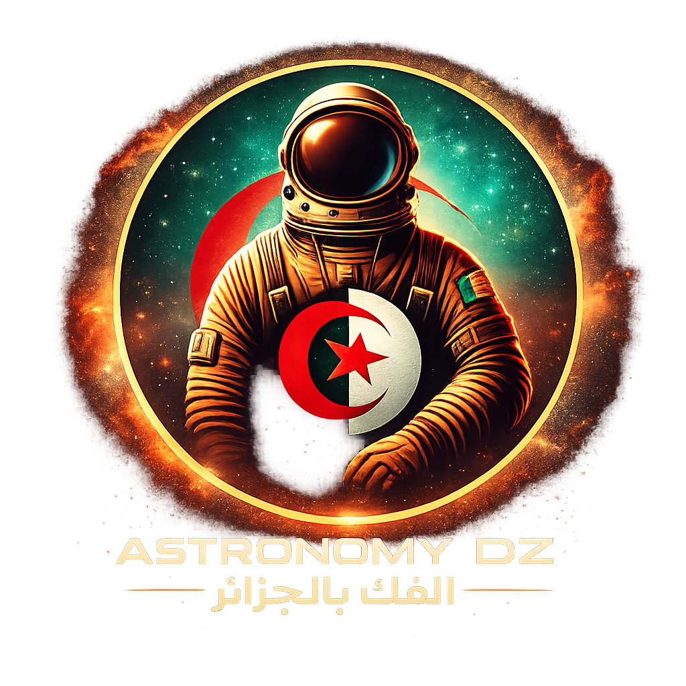
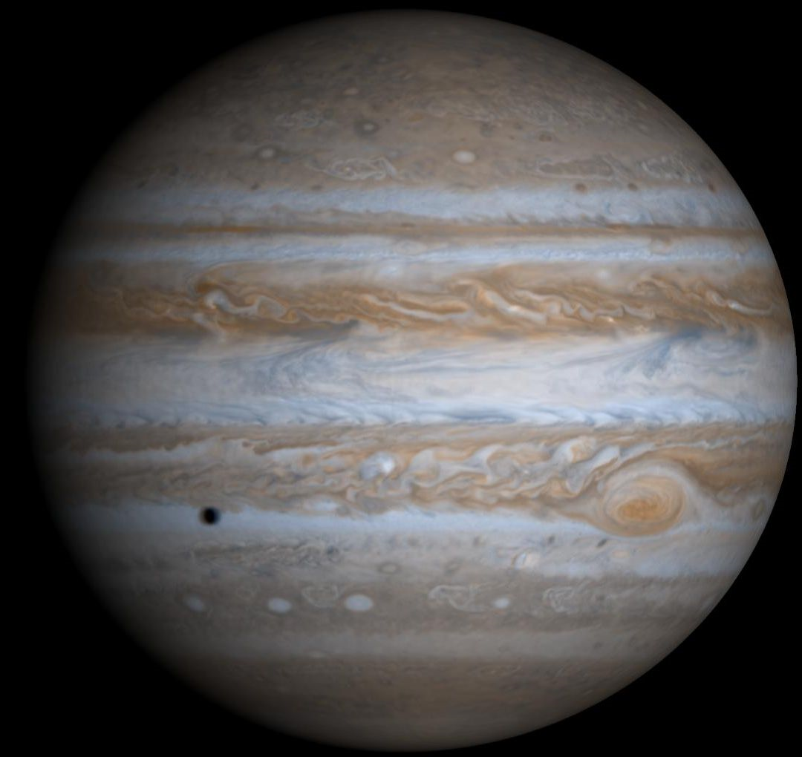

مرحبا بك في تطبيق Astronomy DZ
استعد لرحلة فلكية بصرية تفاعلية

Astronomy DZ
بوابة فلكية تفاعلية بتجربة سينيمائية حديثة للاستكشاف والتعلّم.
البوت الفلكي
شرح عميق ومفصل بأسلوب الأستاذ.
↗

الكواكب
مقارنات، مسابقات، وإنجازات الاستكشاف.
↗
مستكشفون
علماء الفلك عبر التاريخ وأثرهم العلمي.
↗
الإعجاز العلمي
ربط معرفي بين النص القرآني والظواهر الفلكية
↗
محاكاة المدارات
استعراض بصري للمدارات وحركة الأجرام.
↗
Space Explorer XR
هبوط ومشي واستكشاف كوكبي أعمق.
↗
الإعدادات
ضبط الواجهة والصوت وتجربة الاستخدام.
↗